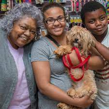

Welcome to Pawnder, where we're dedicated to creating lasting bonds between pets and their forever families. At Pawnder, we understand the importance of finding the perfect match for both pet and owner. Our mission goes beyond just facilitating adoptions; we're committed to reducing animal returns by ensuring that every adoption is a well-informed decision. Through our platform, prospective pet parents can browse through profiles of adorable animals awaiting their forever homes. But our commitment doesn't end there. We provide comprehensive resources and educational materials to empower pet owners, ensuring they have the knowledge and support needed to provide a loving and nurturing environment for their new furry friends. Join us in our mission to lower animal returns and promote responsible pet ownership.

|  |

|